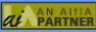

| acia events |
| Synonyms and Taxonomies |
| A one-day workshop on thesaurus design for information architects. |
| strange connections |
| (February 19, 2001) |
| Software for Information Architects |
| Will the "electronic brains" steal our jobs? Should we trust engineers? |
| white papers |
| (April 2001) |
| Analyzing the Analysts |
| Do the IT Analysts practice what they preach? |
| More by Argus |
|
The Argus Center for Information Architecture is owned by
Peter Morville and
Louis Rosenfeld.
|
| Notice |
|
Due to the closure of Argus Associates in 2001, the ACIA is no longer updated.
|
|
events
ASIS&T 2002 Information Architecture Summit
Baltimore, MD (3/16-17)
CHI 2002
Minneapolis, MN (4/20-25)
Full Calendar of Events
people
Bonnie Nardi
Co-author of Information Ecologies...
survey
Formal Educational Credentials
|
content
Don't Make Me Think!
by Steve Krug
ia guide
A selective online bibliography...
Browse by:
Subject
Author / Compiler
Title
community
Find or announce a virtual community...
employment
Find a job.
|
|
Asilomar Institute for Information Architecture
|
|

AIfIA is a nonprofit membership organization dedicated to advancing the field.
|
|